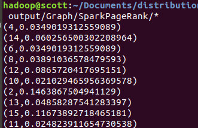
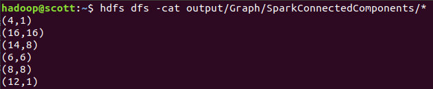
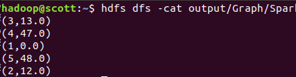

PageRank
数据准备
边：
1 2
1 15
2 3
2 4
2 5
2 6
2 7
3 13
4 2
5 11
5 12
6 1
6 7
6 8
7 1
7 8
8 1
8 9
8 10
9 14
9 1
10 1
10 13
11 12
11 1
12 1
13 14
14 12
15 1
网页：
1
2
3
4
5
6
7
8
9
10
11
12
13
14
15
将这两个文件放入HDFS：
hdfs dfs -mkdir input/PageRank
hdfs dfs -put links.txt input/PageRank
hdfs dfs -put pages.txt input/PageRank
编写程序
import org.apache.spark.SparkConf;
import org.apache.spark.api.java.*;
import org.apache.spark.api.java.function.Function;
import org.apache.spark.api.java.function.PairFunction;
import scala.Tuple2;
import static java.lang.Math.abs;
public class PageRank {
private static int MaxIteration = 100;
private static final double DAMPENING_FACTOR = 0.85;
private static final double EPSILON = 0.0001;
public static void main(String[] args) {
SparkConf conf = new SparkConf().setAppName("PageRank");
JavaSparkContext sc = new JavaSparkContext(conf);
sc.setLogLevel("WARN");
String linksFile = "hdfs:///user/hadoop/input/PageRank/links.txt";
String pagesFile = "hdfs:///user/hadoop/input/PageRank/pages.txt";
String rankFile = "hdfs:///user/hadoop/output/Graph/SparkPageRank";
/**
* neighborRDD: (from, s)
* linksRDD: tuple (from, [to,1/m])
* pageRDD: vertex
* pageRankRDD: (point, 1/n)
*/
JavaPairRDD<Integer, Integer> neighborRDD = sc.textFile(linksFile)
.mapToPair(
line -> new Tuple2<>(
Integer.parseInt(line.split(" ")[0]), 1))
.reduceByKey((x, y) -> x + y);
JavaPairRDD<Integer, Tuple2<Integer, Integer>> linksRDD = sc.textFile(linksFile)
.mapToPair(
line -> new Tuple2<>(
Integer.parseInt(line.split(" ")[0]),
Integer.parseInt(line.split(" ")[1])
))
.join(neighborRDD);
JavaRDD<Integer> pagesRDD = sc.textFile(pagesFile).map(line -> Integer.parseInt(line));
long pageCount = pagesRDD.count();
JavaPairRDD<Integer, Double> pageRankRDD = pagesRDD.mapToPair(
vertex -> new Tuple2<>(vertex, 1.0 / pageCount)
);
int count = 0;
while (count < MaxIteration) {
JavaPairRDD<Integer, Double> NewPageRankRDD = linksRDD.join(pageRankRDD)
.mapToPair(
new PairFunction<Tuple2<Integer, Tuple2<Tuple2<Integer, Integer>, Double>>, Integer, Double>() {
@Override
public Tuple2<Integer, Double> call(Tuple2<Integer, Tuple2<Tuple2<Integer, Integer>, Double>> ans) throws Exception {
// // [ toNode, fraction * rank]
return new Tuple2<>(ans._2._1._1, ans._2._2/ans._2._1._2);
}
})
.reduceByKey((v1, v2) -> v1 + v2)
.mapValues(
new Function<Double, Double>() {
double dampening = DAMPENING_FACTOR;
double randomJump = (1 - DAMPENING_FACTOR) / pageCount;
@Override
public Double call(Double value) throws Exception {
value = value * dampening + randomJump;
return value;
}
}
);
count++;
JavaPairRDD<Integer, Tuple2<Double, Double>> compare = pageRankRDD.join(NewPageRankRDD).filter(each -> abs(each._2._1 - each._2._2) > EPSILON);
if (compare.isEmpty() || count > MaxIteration)
break;
pageRankRDD = NewPageRankRDD;
}
pageRankRDD.saveAsTextFile(rankFile);
}
}
思路：
- 全部使用Lambda表达式进行，首先需要找到所有的边的条数，初始化Rank值
- 然后使用Join进行合并，并计算下一轮Rank
- 使用
DAMPENING_FACTOR进行随机跳转
运行
spark-submit --class PageRank PageRank-1.0.jar
hdfs dfs -cat output/Graph/SparkPageRank/*
结果为：

ConnectedComponents
数据准备
提供基本数据集，与PageRank一样，指定顶点和边
vertices.txt
准备一些顶点，例如1-16
edges.txt
准备一些连接边：
1 2
2 3
2 4
3 5
6 7
8 9
8 10
5 11
11 12
10 13
9 14
13 14
1 15
16 1
将这两个文件放入HDFS：
hdfs dfs -mkdir input/ConnectedComponents
hdfs dfs -put edges.txt input/ConnectedComponents
hdfs dfs -put vertices.txt input/ConnectedComponents
编写程序
import org.apache.spark.SparkConf;
import org.apache.spark.api.java.JavaPairRDD;
import org.apache.spark.api.java.JavaSparkContext;
import scala.Tuple2;
import static java.lang.StrictMath.min;
public class ConnectedComponents {
public static int MaxIteration = 100;
public static void main(String[] args) {
SparkConf conf = new SparkConf().setAppName("ConnectedComponents");
JavaSparkContext sc = new JavaSparkContext(conf);
sc.setLogLevel("WARN");
String edgesFile = "hdfs:///user/hadoop/input/ConnectedComponents/edges.txt";
String verticesFile = "hdfs:///user/hadoop/input/ConnectedComponents/vertices.txt";
String outFile = "hdfs:///user/hadoop/output/Graph/SparkConnectedComponents";
/**
* edgesRDD: [x,y]
* componentsRDD: [x,x] init
*/
JavaPairRDD<Integer, Integer> edgesRDD = sc.textFile(edgesFile)
.mapToPair(
line -> new Tuple2<>(
Integer.parseInt(line.split(" ")[0]),
Integer.parseInt(line.split(" ")[1])
)
);
JavaPairRDD<Integer, Integer> componentsRDD = sc.textFile(verticesFile)
.mapToPair(
line -> new Tuple2<>(Integer.parseInt(line), Integer.parseInt(line))
);
int count = 0;
while (count < MaxIteration) {
JavaPairRDD<Integer, Integer> newcomponentsRDD = componentsRDD.join(edgesRDD)
.mapToPair(
x -> new Tuple2<>(x._2._2, x._2._1)
)
.reduceByKey(
(v1, v2) -> min(v1, v2)
);
JavaPairRDD<Integer, Tuple2<Integer, Integer>> filterRDD = newcomponentsRDD.join(componentsRDD)
.filter(
each -> each._2._1 < each._2._2
);
if (filterRDD.isEmpty())
break;
// update to componentsRDD
componentsRDD = componentsRDD.leftOuterJoin(newcomponentsRDD).
mapValues(
v -> min(v._1, v._2.orElse(v._1))
);
count++;
}
componentsRDD.saveAsTextFile(outFile);
}
}
思路：
- 首先需要将每个点映射成自己的强连通分支
- 每次迭代，更新与自己相连的点的强连通分支，取最小值
- 使用左连接更新原始的强连通分支
运行
spark-submit --class ConnectedComponents ConnectedComponents-1.0.jar
hdfs dfs -cat output/Graph/SparkConnectedComponents/*
查看结果：

SingleSourceShortestPaths
数据准备
首先我们需要准备边和点
边：
1 2 12.0
1 3 13.0
2 3 23.0
3 4 34.0
3 5 35.0
4 5 45.0
5 1 51.0
点：
1
2
3
4
5
将这两个文件放入HDFS：
hdfs dfs -mkdir input/SingleSourceShortestPaths
hdfs dfs -put edges.txt input/SingleSourceShortestPaths
hdfs dfs -put vertices.txt input/SingleSourceShortestPaths
编写程序
import org.apache.spark.SparkConf;
import org.apache.spark.api.java.JavaPairRDD;
import org.apache.spark.api.java.JavaSparkContext;
import scala.Tuple2;
import javax.validation.constraints.Max;
import static java.lang.StrictMath.min;
public class SingleSourceShortestPaths {
public static int sourceVerticeID = 1;
public static int MaxIteration = 100;
public static void main(String[] args) throws Exception {
SparkConf conf = new SparkConf().setAppName("ConnectedComponents");
JavaSparkContext sc = new JavaSparkContext(conf);
sc.setLogLevel("WARN");
String edgesFile = "hdfs:///user/hadoop/input/SingleSourceShortestPaths/edges.txt";
String verticesFile = "hdfs:///user/hadoop/input/SingleSourceShortestPaths/vertices.txt";
String outFile = "hdfs:///user/hadoop/output/Graph/SparkSingleSourceShortestPaths";
/**
* edgesRDD: [from, to, dis ]
* verticesRDD: [vertice, dis]
*/
JavaPairRDD<Integer, Tuple2<Integer, Double>> edgesRDD = sc.textFile(edgesFile)
.mapToPair(
line -> {
int from = Integer.parseInt(line.split(" ")[0]);
int to = Integer.parseInt(line.split(" ")[1]);
double dis = Double.parseDouble(line.split(" ")[2]);
return new Tuple2<>(from, new Tuple2<>(to, dis));
}
);
JavaPairRDD<Integer, Double> verticesRDD = sc.textFile(verticesFile)
.mapToPair(
line -> {
int vertice = Integer.parseInt(line);
if (vertice == sourceVerticeID)
return new Tuple2<>(vertice, 0.0);
return new Tuple2<>(vertice, Double.POSITIVE_INFINITY);
}
);
int count = 0;
while (count < MaxIteration) {
// get new dis
JavaPairRDD<Integer, Double> newVerticesRDD = verticesRDD
.join(edgesRDD)
.mapToPair(
line -> {
if (line._2._1 != Double.POSITIVE_INFINITY)
return new Tuple2<>(line._2._2._1, line._2._1 + line._2._2._2);
return new Tuple2<>(line._2._2._1, Double.POSITIVE_INFINITY);
}
).reduceByKey(
(v1, v2) -> min(v1, v2));
JavaPairRDD<Integer, Tuple2<Double, Double>> filterRDD = newVerticesRDD.join(verticesRDD)
.filter(
each -> each._2._1 < each._2._2);
if (filterRDD.isEmpty())
break;
// update to verticesRDD
verticesRDD = verticesRDD.leftOuterJoin(newVerticesRDD).
mapValues(
v -> min(v._1, v._2.orElse(v._1)));
}
verticesRDD.saveAsTextFile(outFile);
}
}
思路：
- 首先需要初始化每个顶点的距离，将原始点设置为0，其余设置为无穷
- 每次迭代得到新的顶点距离，并使用
reduceByKey最小化，比较是否更新 - 然后将更新得到的顶点距离加入原始RDD中
运行
spark-submit --class SingleSourceShortestPaths SingleSourceShortestPaths-1.0.jar
hdfs dfs -cat output/Graph/SparkSingleSourceShortestPaths/*
查看结果：
